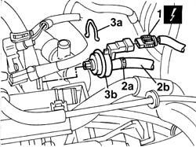
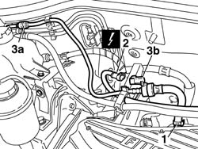
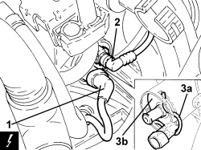

1080E28 enablement solenoid for flow of fuel vapour to inlet - r+r
- Path
- Procedures > 10 ENGINE > 1080 EMISSION CONTROL SYSTEM > 1080E EVAPORATION CONTROL SYSTEM > 1080E28 enablement solenoid for flow of fuel vapour to inlet - r+r
- Kind
- repair procedure (removal / refitting; the operation number is the code)
- Applies to
- engines: 1.2 8v, 1.4 8v, 1.6 16v; all production periods
- Interactive page
- https://sloeber94.github.io/elrnDB-fDbl/en/#/2584281
Applies to: engines: 1.2 8v; all production periods
 Removing
Removing
 Refitting
RefittingDisconnect the battery negative terminal.
Op. 1048A10 AIR FILTER ASSEMBLY - R.R.
1. Disconnect the electrical connection from the solenoid.
 | Name | Connector |
|---|---|---|
1 | Fuel vapour recovery solenoid |
2. Acting on the band (2a), disconnect the pipe (2b) from the solenoid valve.
3. Open the retaining spring (3a) and remove the solenoid valve (3b).

Applies to: engines: 1.2 8v; all production periods
Refitting
RemovingFit solenoid and secure using retaining clip
Connect the solenoid electrical connection.
| Name | Connector |
|---|---|---|
- | Fuel vapour recovery solenoid |
Connect the anti-evaporation pipe to the solenoid valve.
Op. 1048A10 AIR FILTER ASSEMBLY - R.R.
Connect the battery negative terminal.
Applies to: engines: 1.6 16v; all production periods
Removing
RefittingDisconnect the battery negative terminal.
1. Disconnect the connector on the air inlet chamber, for the fuel vapour recovery pipe.
2. Disconnect the electrical connection from the solenoid.
| Name | Connector |
|---|---|---|
2 | Fuel vapour recovery solenoid |
3. Disconnect connection (3a) on the fuel vapour recovery pipe, then remove solenoid (3b) complete with pipe by releasing from the support bracket.

Applies to: engines: 1.6 16v; all production periods
Refitting
RemovingConnect the connection pipe to the solenoid and secure with a band.
Connect the fitting to the air intake chamber by means of a band.
Connect the solenoid electrical connection.
| Name | Connector |
|---|---|---|
- | Fuel vapour recovery solenoid |
Secure the pipes to the support bracket.
Connect the battery negative terminal.
Applies to: engines: 1.4 8v; all production periods
Removing
Refitting- Disconnect the negative battery terminal.
Applies to: engines: 1.4 8v; all production periods
1. Connect the electrical connection to the fuel vapour solenoid valve.
Description | Connector | |
|---|---|---|
1 | Fuel vapour recovery solenoid valve |
2. Disconnect the rapid connector for the fuel vapour pipe.
3. Pull back retaining clip (3a) and remove solenoid (3b).

Applies to: engines: 1.4 8v; all production periods
Refitting
Removing- Refit the fuel vapour solenoid in its seat and connect the fuel vapour pipe quick fitting.
- Connect the electrical connection to the fuel vapour solenoid valve.
- Connect the negative battery terminal.
Topics linked from this page (3)
- 1048A10 air cleaner filtering element - replace
- L010 FUEL VAPOUR RECOVERY SOLENOID
- L10 FUEL VAPOUR RECOVERY SOLENOID VALVE ( ENGINE )